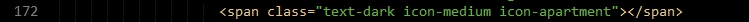
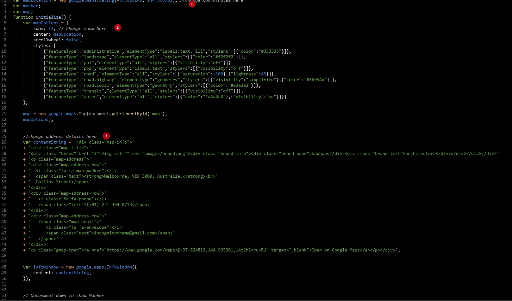
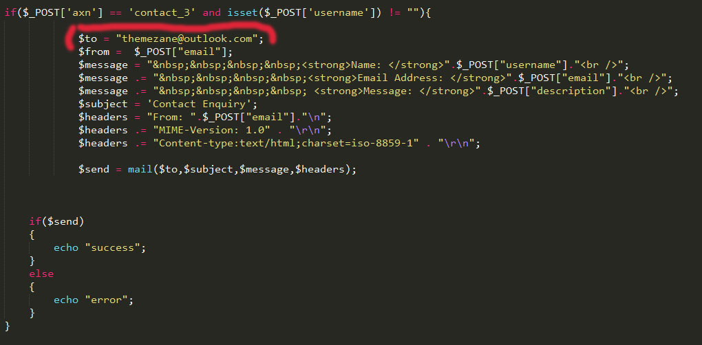

KONS
KONS HTML Template
- created: 06/11/2017
- by: paul_tf
- themeforest.net/user/paul_tf
- email: 000.lunchbox@gmail.com
Change Logo
1. Just Find logo.png in header and replace it with your logo.
HTML:
Icons
Icons from the most popular icons pack ionicons.min and linearicons Fontawesome
ion icons:

linear icons:
Revolution Slider
Header Slideshow build with Revolution slider jquery plugin. You can find documentation here
All slides are into img/resources directory
HTML
Project Filter
For project filter used isotope filter
Just add or change filter class on isotope item, and it will be filtered on click
Change map
How to change the map?
Go to the js folder and open gmap.js
1. Change coordinates: latitude and longitude
Watch video "how to get google maps latitude longitude". Video
2. If needs, change zoom of the map
3. Change address details
4. If needs, uncomment marker to show it
5. If needs, uncomment info window which will be open on marker click


Send form
Open mail.php and change the current email themezane@outlook.com to your email address

Credits
jQuery http://jquery.com/
Bootstrap http://getbootstrap.com/
FullPage Plugin https://alvarotrigo.com/fullPage/
Revolution slider https://revolution.themepunch.com/jquery/
jQuery isotope http://isotope.metafizzy.co/
Slick SLider Carousel http://kenwheeler.github.io/slick/
Google maps https://developers.google.com/maps/
Animate.css https://daneden.github.io/animate.css/